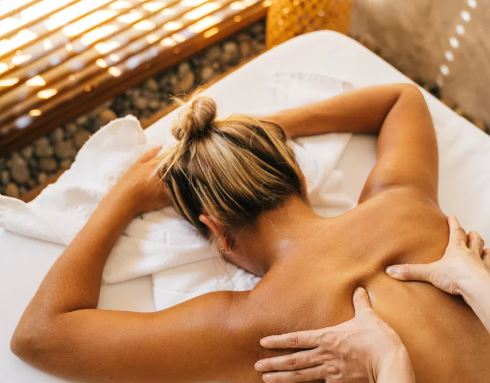

Beneficios del Masaje
El masaje fortalece el sistema inmunológico, siendo beneficioso para diversos padecimientos físicos y mentales que debilitan el organismo. Las personas que reciben masajes de forma regular mejoran su rendimiento, están más alerta, más motivados y menos estresados. Reducen la ansiedad, la tensión y la depresión.
- Ayudar a reducir el estrés.
- Disminuir el dolor y la tensión muscular.
- Aumentar la relajación.
- Mejorar la función del sistema inmunitario.